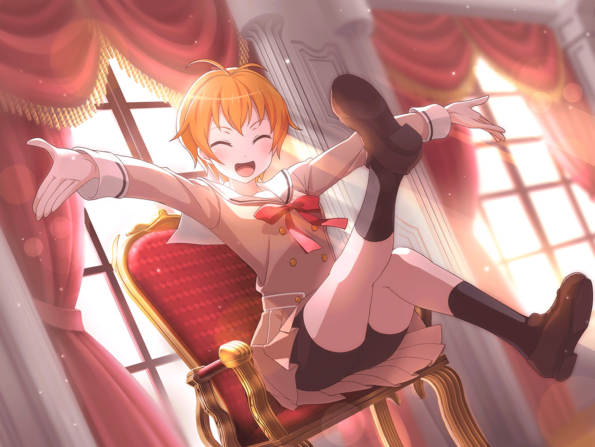

弦巻家 応接室
はぐみ
バンドでぜったい、世界を笑顔にする……！
薫
音楽で……世界を、笑顔に……！
はぐみ・こころ・薫
——う～ん。……でもどうやって？
美咲
あのさあ。
もう１時間くらいそれ繰り返してるけど大丈夫？
花音
でも……難しいです……どうすれば……
こころ
ただ歌えばいいのかしら？
ただ楽器を弾けばいいのかしら？
なんだかちょっと、違う気がするの
はぐみ
あっ、はぐみわかった！
はぐみがギター弾きながら変な顔とかしたらどう？
みんな笑うんじゃないかな！？
花音
は、はぐみさんの担当楽器は、
ギターじゃなくてベースだよっ
はぐみ
あっ。そうだったっけ？
ていうか、「さん」とか要らないよっ
花音
え。えっと……じゃあ、はぐみ……ちゃん？
薫
とてもいい案だけれど、
すまない……私には不可能だ。
私には何をしても美しくなってしまう運命が……
こころ
そうなの？ 薫の運命って大変なのね！
薫
……！？
こころ……！ 君は……ああ、なんてことだ。
君は今、私の運命を理解してくれたのか！！
薫
この世にそんな人がいるとは思わなかった……
君は私と……同じ魂をもった運命の相手だ！！
こころ
あら。ありがとう！
こころ
でも、なんの理由もなしに、ここにいる人なんて
いないわよ。こうして揃った時点で、
もうあたしたちには何か理由ができてると思わない？
美咲
（いや、あたしは特に理由、なくていいです……）
薫・はぐみ・花音
……理由……
花音
私……いつも人に言われるままだったけど……
そんな私でも……ここにいる理由……が？
でも私……みんなと一緒に、ちゃんとできるか……
美咲
花音さん、そんなに真面目に考えなくても大丈夫だよ？
疲れるだけだから
花音
そ、そうなんですか……？
はぐみ
はぐみも……ずっとずっと『戦って』きたから……
強いとか、負けないとか以外にも、
理由のあるものがあるって、今知った……
こころ
それはそうよ！ だってあなた達は、
このバンドのメンバーなんだから！
はぐみ・薫・花音
……！
美咲
（いやいや、あたしは違いますからね）
薫
シェイクスピアも言っている。
天の力でなくてはと思うことを、人がやってのけることもある。
そうだ！ 喜劇を演じるというのは……
花音
ちょ、ちょっと待ってっ。
またバンドから離れてます～っ！
こころ
う～ん？ やっぱりとにかく、出会った人に
あたし達と一緒に笑顔になろう！
って言えばいいんじゃないかしら？
美咲
いやあなた、その作戦、
校内でことごとく失敗してたからね？
こころ
そうなの？ 『結構ですあはは』
って笑ってくれる人がほとんどだったわよ？
美咲
それ失敗してるんだよ！？ 自覚なかったんだ！？
こころ
でも、せっかくバンドをつくったんだから、
今までと違うことがしたいわ。
そうじゃなきゃ、楽しくないものっ
こころ
相手に楽しくなってもらうには、
まずはあたしたちが楽しくなくっちゃ！！
はぐみ
うんわかる！！
はぐみ、こころちゃんの考えすっごい好きっ！
ね。こころんって呼んでもいい？
こころ
いいわよ！
……それにしても、なかなか出てこないわね。
あたしたちの『楽しいこと』
はぐみ・こころ・薫
うーん。バンドって難しい～……
美咲
いや、ねえ。だからさ。
悩む前にまだ楽器も持ってないよね？
はぐみ・こころ・薫
——楽器！！ それだ、演奏！！！！
美咲
やっとわかってくれましたか
こころ
そうだわ！ じゃあさっそくみんなに楽器を……
謎のスーツの集団
こころさま。ギター・ベース・ドラム。
すべて整えております。
こちらの部屋に運ばせましょう
美咲
（準備はや！！ マジで何者なの！？）
こころ
よしっ。楽器もそろったし、バンドをやってみるわよっ。
やればきっと何かが起こるわ！
ぜったいぜったいみーんな、笑顔になる！！
はぐみ
考える前に感じろ！ 行動あるのみ！ だね！
うんっ！ 超同感っ！
よーし、なにか掛け声がいるね！！
美咲
この会議はなんだったんだ……

はぐみ
思いついた！
『ハッピー！ ラッキー！ スマイル！ イエーイ！』
掛け声これでどうかなっ？
こころ
素晴らしいわ！
じゃあ、掛け声と同時にスタートよ！
ハッピー！ ラッキー！ スマイル！ イエーイ！！
花音
えっ。ちょっ、こころちゃん、あの……！
薫・はぐみ
ハッピー！ ラッキー！ スマイル！ イエーイ！！
全員
…………
薫
……こころ、今気づいたんだけれど
私たちは、どんな音楽を奏でればいいのかな？
こころ
そうだったわ。決めてなかったわね！
美咲
本当に何にも決まってなかったんだね！？
花音
ごめんなさい、私も今、言おうとしたんだけど……
はぐみ
あれ。かーちゃんからメッセージ？
どうしたんだろ。珍し……
……………………
美咲
もうダメだ。この三人はバカだ。３バカだ！！
花音さん！
これ以上振り回されるのはやめて、あたしと帰ろう！
花音
え……でも、私……
花音
（この人達についていけるかわからないけど、
でもこうやって、みんなを巻き込むこころちゃんを
もう少し、見ていたい気がして……）
美咲
花音さん？
ああもう……
あたしも帰るに帰れないじゃん……